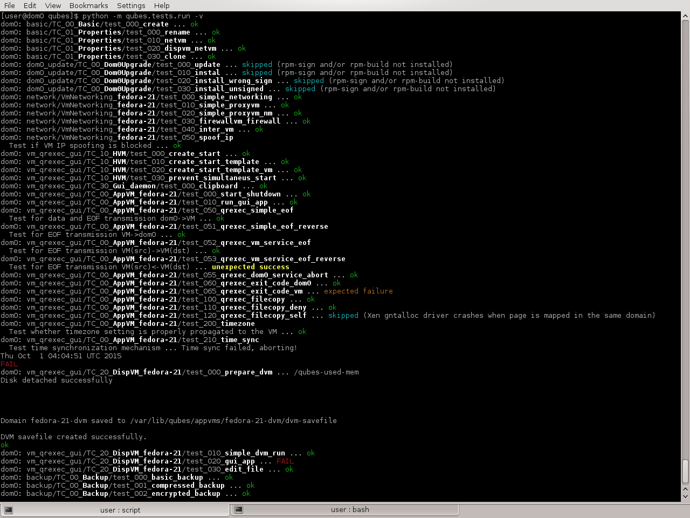
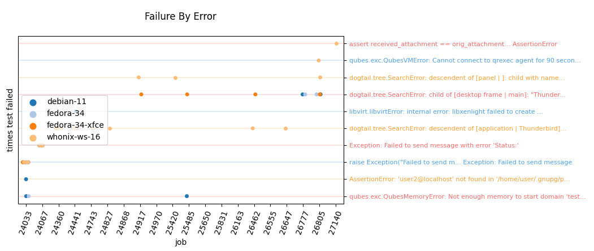

Automated tests
Unit and Integration Tests
Starting with Qubes R3 we use python unittest to perform automatic tests of Qubes OS. Despite the name, we use it for both unit tests and integration tests. The main purpose is, of course, to deliver much more stable releases.
The integration tests must be run in dom0, but some unit tests can run inside a VM as well.
Integration & unit testing in dom0
Integration tests are written with the assumption that they will be executed on dedicated hardware and must be run in dom0. All other unit tests can also be run in dom0.
Do not run the tests on installations with important data, because you might lose it.
All the VMs with a name starting with test- on the installation are removed during the process, and all the tests are recklessly started from dom0, even when testing (& possibly breaking) VM components.
First you need to build all packages that you want to test. Please do not mix branches as this will inevitably lead to failures. Then setup Qubes OS with these packages installed.
For testing you’ll have to stop the qubesd service as the tests will use its own custom variant of the service: sudo systemctl stop qubesd
Don’t forget to start it after testing again.
To start testing you can then use the standard python unittest runner:
sudo -E python3 -m unittest -v qubes.tests
Alternatively, use the custom Qubes OS test runner:
sudo -E python3 -m qubes.tests.run -v
Our test runner runs mostly the same as the standard one, but it has some nice additional features like colored output and not needing the “qubes.test” prefix.
You can use python3 -m qubes.tests.run -h to get usage information:
[user@dom0 ~]$ python3 -m qubes.tests.run -h
usage: run.py [-h] [--verbose] [--quiet] [--list] [--failfast] [--no-failfast]
[--do-not-clean] [--do-clean] [--loglevel LEVEL]
[--logfile FILE] [--syslog] [--no-syslog] [--kmsg] [--no-kmsg]
[TESTNAME [TESTNAME ...]]
positional arguments:
TESTNAME list of tests to run named like in description
(default: run all tests)
optional arguments:
-h, --help show this help message and exit
--verbose, -v increase console verbosity level
--quiet, -q decrease console verbosity level
--list, -l list all available tests and exit
--failfast, -f stop on the first fail, error or unexpected success
--no-failfast disable --failfast
--loglevel LEVEL, -L LEVEL
logging level for file and syslog forwarding (one of:
NOTSET, DEBUG, INFO, WARN, WARNING, ERROR, CRITICAL;
default: DEBUG)
--logfile FILE, -o FILE
if set, test run will be also logged to file
--syslog reenable logging to syslog
--no-syslog disable logging to syslog
--kmsg, --very-brave-or-very-stupid
log most important things to kernel ring-buffer
--no-kmsg, --i-am-smarter-than-kay-sievers
do not abuse kernel ring-buffer
--allow-running-along-qubesd
allow running in parallel with qubesd; this is
DANGEROUS and WILL RESULT IN INCONSISTENT SYSTEM STATE
--break-to-repl break to REPL after tests
When running only specific tests, write their names like in log, in format:
MODULE+"/"+CLASS+"/"+FUNCTION. MODULE should omit initial "qubes.tests.".
Example: basic/TC_00_Basic/test_000_create
For instance, to run only the tests for the fedora-21 template, you can use the -l option, then filter the list:
[user@dom0 ~]$ python3 -m qubes.tests.run -l | grep fedora-21
network/VmNetworking_fedora-21/test_000_simple_networking
network/VmNetworking_fedora-21/test_010_simple_proxyvm
network/VmNetworking_fedora-21/test_020_simple_proxyvm_nm
network/VmNetworking_fedora-21/test_030_firewallvm_firewall
network/VmNetworking_fedora-21/test_040_inter_vm
vm_qrexec_gui/TC_00_AppVM_fedora-21/test_000_start_shutdown
vm_qrexec_gui/TC_00_AppVM_fedora-21/test_010_run_gui_app
vm_qrexec_gui/TC_00_AppVM_fedora-21/test_050_qrexec_simple_eof
vm_qrexec_gui/TC_00_AppVM_fedora-21/test_051_qrexec_simple_eof_reverse
vm_qrexec_gui/TC_00_AppVM_fedora-21/test_052_qrexec_vm_service_eof
vm_qrexec_gui/TC_00_AppVM_fedora-21/test_053_qrexec_vm_service_eof_reverse
vm_qrexec_gui/TC_00_AppVM_fedora-21/test_060_qrexec_exit_code_dom0
vm_qrexec_gui/TC_00_AppVM_fedora-21/test_065_qrexec_exit_code_vm
vm_qrexec_gui/TC_00_AppVM_fedora-21/test_100_qrexec_filecopy
vm_qrexec_gui/TC_00_AppVM_fedora-21/test_110_qrexec_filecopy_deny
vm_qrexec_gui/TC_00_AppVM_fedora-21/test_120_qrexec_filecopy_self
vm_qrexec_gui/TC_20_DispVM_fedora-21/test_000_prepare_dvm
vm_qrexec_gui/TC_20_DispVM_fedora-21/test_010_simple_dvm_run
vm_qrexec_gui/TC_20_DispVM_fedora-21/test_020_gui_app
vm_qrexec_gui/TC_20_DispVM_fedora-21/test_030_edit_file
[user@dom0 ~]$ sudo -E python3 -m qubes.tests.run -v `python3 -m qubes.tests.run -l | grep fedora-21`
Some developers script this part, so you can provide arguments to the script and it handles qubesd. Save the following contents to ~/run-tests:
#!/bin/sh
set -eu
exit_trap(){
systemctl restart qubesd
}
trap exit_trap EXIT
systemctl stop qubesd
sudo -E python3 -m qubes.tests.run "$@"
And run:
~/run-tests -L INFO -o /tmp/tests.log <TEST_NAME>
You might even almost complete test names and shell expansion:
~/run-tests qubes.tests.integ.dispvm_perf/TC_00_DispVMPerf_debian-{12,13}-xfce/test_0{0,1,2}
Example test run:

Tests are also compatible with nose2 test runner, so you can use this instead:
$ sudo systemctl stop qubesd; sudo -E nose2 -v --plugin nose2.plugins.loader.loadtests qubes.tests; sudo systemctl start qubesd
This may be especially useful together with various nose2 plugins to store tests results (for example nose2.plugins.junitxml), to ease presenting results. This is what we use on OpenQA.
If you cancel the test, normally by Ctrl-C | SIGINT repeatedly, you might not be able to start the next test, it will hang. To solve that, Ctrl-C until it quits the test, restart qubesd and start the test again.
Unit testing inside a VM
Many unit tests will also work inside a VM. However all of the tests requiring a dedicated VM to be run (mostly the integration tests) will be skipped.
Whereas integration tests are mostly stored in the qubes-core-admin repository, unit tests can be found in each of the Qubes OS repositories.
To for example run the qubes-core-admin unit tests, you currently have to clone at least qubes-core-admin and its dependency qubes-core-qrexec repository in the branches that you want to test.
The below example however will assume that you set up a build environment as described in the Qubes Builder documentation.
Assuming you cloned the qubes-builder repository to your home directory inside a fedora VM, you can use the following commands to run the unit tests:
$ cd ~
$ sudo dnf install python3-pip lvm2 python35 python3-virtualenv
$ virtualenv -p /usr/bin/python35 python35
$ source python35/bin/activate
$ python3 -V
$ cd ~/qubes-builder/qubes-src/core-admin
$ pip3 install -r ci/requirements.txt
$ export PYTHONPATH=../core-qrexec:test-packages
$ ./run-tests
To run only the tests related to e.g. lvm, you may use:
./run-tests -v $(python3 -m qubes.tests.run -l | grep lvm)
You can later re-use the created virtual environment including all of the via pip3 installed packages with source ~/python35/bin/activate.
We recommend to run the unit tests with the Python version that the code is meant to be run with in dom0 (3.5 was just an example above). For instance, the release4.0 (Qubes 4.0) branch is intended to be run with Python 3.5 whereas the Qubes 4.1 branch (master as of 2020-07) is intended to be run with Python 3.7 or higher. You can always check your dom0 installation for the Python version of the current stable branch.
Tests configuration
Test runs can be altered using environment variables:
DEFAULT_LVM_POOL- LVM thin pool to use for tests, inVolumeGroup/ThinPoolformatQUBES_TEST_PCIDEV- PCI device to be used in PCI passthrough tests (for example sound card)QUBES_TEST_TEMPLATES- space separated list of templates to run tests on; if not set, all installed templates are testedQUBES_TEST_LOAD_ALL- load all tests (including tests for all templates) when relevant test modules are imported; this needs to be set for test runners not supporting load_tests protocol
Adding a new test to core-admin
After adding a new unit test to core-admin/qubes/tests you’ll have to include it in core-admin/qubes/tests/__init__.py
Editing __init__.py
You’ll also need to add your test at the bottom of the __init__.py file, in the method def load_tests, in the for loop with modname. Again, given the hypothetical example.py test:
for modname in (
'qubes.tests.basic',
'qubes.tests.dom0_update',
'qubes.tests.network',
'qubes.tests.vm_qrexec_gui',
'qubes.tests.backup',
'qubes.tests.backupcompatibility',
'qubes.tests.regressions',
'qubes.tests.example', # This is our newly added test
):
Testing PyQt applications
When testing (Py)QT applications, it’s useful to create a separate QApplication object for each test. But QT framework does not allow multiple QApplication objects in the same process at the same time. This means it’s critical to reliably cleanup the previous instance before creating a new one. This turns out to be a non-trivial task, especially if any test uses the event loop. Failure to perform proper cleanup in many cases results in SEGV. Below you can find steps for the proper cleanup:
import asyncio
import quamash
import unittest
import gc
class SomeTestCase(unittest.TestCase):
def setUp(self):
[...]
# force "cleanlooks" style, the default one on Xfce (GtkStyle) use
# static variable internally and caches pointers to later destroyed
# objects (result: SEGV)
self.qtapp = QtGui.QApplication(["test", "-style", "cleanlooks"])
# construct event loop even if this particular test doesn't use it,
# otherwise events with qtapp references will be queued there anyway and the
# first test that actually use event loop will try to dereference (already
# destroyed) objects, resulting in SEGV
self.loop = quamash.QEventLoop(self.qtapp)
def tearDown(self):
[...]
# process any pending events before destroying the object
self.qtapp.processEvents()
# queue destroying the QApplication object, do that for any other QT
# related objects here too
self.qtapp.deleteLater()
# process any pending events (other than just queued destroy), just in case
self.qtapp.processEvents()
# execute main loop, which will process all events, _including just queued destroy_
self.loop.run_until_complete(asyncio.sleep(0))
# at this point it QT objects are destroyed, cleanup all remaining references;
# del other QT object here too
self.loop.close()
del self.qtapp
del self.loop
gc.collect()
Automated tests with openQA
URL: https://openqa.qubes-os.org/ Tests: https://github.com/QubesOS/openqa-tests-qubesos
Manually testing Qubes OS and its installation is a time-consuming process. We use OpenQA to automate this process. It works by installing Qubes in KVM and interacting with it as a user would, including simulating mouse clicks and keyboard presses. Then, it checks the output to see whether various tests were passed, e.g. by comparing the virtual screen output to screenshots of a successful installation.
Using openQA to automatically test the Qubes installation process works since Qubes 4.0-rc4 on 2018-01-26, provided that the versions of KVM and QEMU are new enough and the hardware has VT-x and EPT. KVM also supports nested virtualization, so HVM should theoretically work. In practice, however, either Xen or QEMU crashes when this is attempted. Nonetheless, PV works well, which is sufficient for automated installation testing.
Thanks to present and past donors who have provided the infrastructure for Qubes’ openQA system with hardware that meets these requirements.
How to add openQA test
openQA tests integration of your PR will the rest of the system, therefore, for that, if your code is not tested yet buy unittests because of reasons, write integration tests in the tests/integ directory. This directory already exists in most relevant repositories, we will approach only this case for now.
If your code may hang, use a timeout on a section of the code. This avoids holding openQA hostage for too long, which otherwise is capped to MAX_JOB_TIME
Performance tests runs on hardware @hw*. Everything else, should run on Qubes in KVM on a best effort basis, exclusion depends on maintainers decision.
openQA, you might love or hate it, but you need it:
- Qubes in KVM is slow and memory restricted to 8GB of RAM, that is on purpose:
Helps catch leaky objects, might be code that runs after the test is finished, sometimes an
asyncio.FutureEnsures changes are compliant with minimum system requirements
Ability to run simultaneous tests on single worker without conflicts
Runs on a pool of certified systems to guarantee future compatibility
You might want to "simulate" openQA slowness to reproduce errors that you might not see on a more powerful system. You can do so by configuring the following options in Xen command line: maxcpus=2, availmem=8192M
How to schedule openQA
The process is the following:
Github comment on PR: developer interaction
Gitlab pipeline: fetch sources, builds and publishes to openQA
openQA pipeline: automated tests
qubesos-bot comment: brings results to PR, editing comment if existent
Only the first step, scheduling via Github comment, requires developer intervention.
Add label to your PR on Github
Only necessary if testing more than one PR
Ask the maintainer to allow your account to assign labels
Only the maintainer can create labels, unless given individually on a per repository basis
Click the top most search box on Github and use the following query with the label you want to add to your PR: org:QubesOS is:pr is:open label:openqa-group-1. If the label is already used, choose another label. If there are no openqa-* label, either wait or ask the maintainer to add more labels to each desired repository.
Gitlab pipeline
Find your Gitlab pipeline and wait till completion.
In less than 20 seconds after the Github comment, the pipeline will have the
RunningstatusTakes at minimum 10 minutes to complete, if covering more components, it can take more than 1 hour
Only the maintainer can cancel pipelines at this stage because of Gitlab's lax permission system
openQA pipeline
Find your test in openQA pull requests group.
Cancellation:
Sometimes, you might want to cancel a test because it is using outdated code. For that, login to openQA and ask the maintainer for
cancellationpermission. After gaining permission, the cancel button appears as an X near the circle indicating status of the jobDon't cancel
install_default_upload@hw*, it can leave system boot order in weird state, breaks further tests, requiring manual intervention to fix
Check out results
qubesos-bot does comment on Github a summary of the results, providing links to jobs that failed. Click on such link and you will be redirected especifically to the test that failed, at the Details tab.
Settings tab:
PULL_REQUESTS: Included PRs and commit usedQEMURAM: Memory available to the guest, normally 8192 MiBMAX_JOB_TIME: How much time, in seconds, a job can take, until timeout is reached
Details tab:
Find red signs, failure is near
When clicking an image, there is a video icon on the top right to jump to video right when that image was made
Test classes
TC_*, are links, when clicking, you will be able to see beautiful perl code used during the test. Relevant to see why something happens, such as test generation, window actions, environment variables, log uploads
Logs & Assets:
Video: Screencast, you will most likely need to right click and set slower speed. To disable time stamp, click on CC then Offsut_packages.txt: List of packages available on each qube at the beginning of the testvars.json: JSON variant of Settings tabserial0.txt: Dom0 serial outputserial_terminal.txt: Dom0 serial consolesystem_tests-var_log.tar.gz: Dom0 directory/var/log/system_tests-tests-TEST.log: Test resultssystem_tests-*(hypervisor|guest*).log: Dom0 directory/var/log/xen/consolewith all qubes involved in a test that failedsystem_tests-qvm-prefs-QUBE.log:qvm-prefsof qubes running before testsystem_tests-((user-journalctl|journalctl|libxl-driver|xen-hotplug).log|.xsession-errors): Dom0 logs added since the test startedsystem_tests-objgraph*: Memory leak graphs generated by graphviz displayed as image. Image might be huge, farewell*.qcow2: Disk image / snapshot
Looking for patterns in tests
In order to better visualize patterns in tests the openqa_investigator script can be used. It feeds off of the openQA test data to make graph plots. Here is an example:

Some outputs:
plot by tests
plot by errors
markdown
Some filters:
filter by error
filter by test name
Check out the script’s help with python3 openqa_investigator.py --help to see all available options.
Comment on Github
To schedule, comment on a PR
openQArunto test that PR, optionally, add filters:PR_LABEL: All PRs with such labelTEST: Only selected tests, CSVSELINUX_TEMPLATES: Installs selinux on specified templates, CSVTEST_TEMPLATES: Test only selected templates, CSVUPDATE_TEMPLATES: Update only selected templates, CSVDEFAULT_TEMPLATE: Specify default templateFLAVOR:pull-requests,kernel,whonix,templatesKERNEL_VERSION:stable,latestQUBES_TEST_MGMT_TPL: Selectmanagement_dispvmtemplateDISTUPGRADE_TEMPLATES: Dist upgrade only selected templatesMACHINE: Runs on specifiedhw*Notes:
These are
andfilters, when combined, all must matchIf a test is already assigned to a
hw, don't specifyMACHINEExamples: